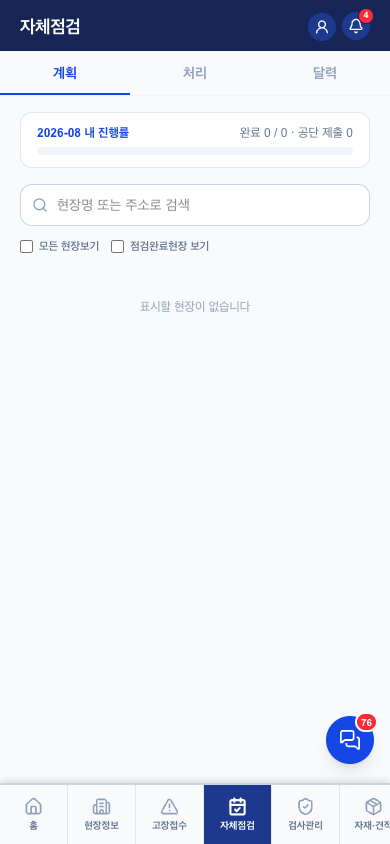
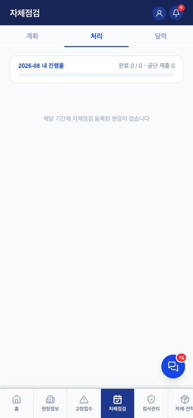
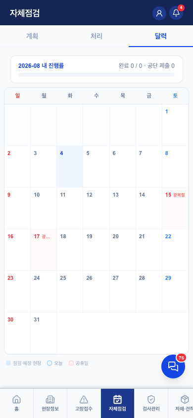

자체점검 v0.1
1. 이 화면의 정체 — 법정 업무의 자동화
- 승강기는 월 1회 자체점검 + 결과를 공단(승강기민원24)에 등록이 법정 의무. 원래는 공단 웹에 일일이 수기 입력 — 이 화면이 그걸 사내 기록과 공단 제출을 한 번에 끝낸다 (서류 없는 회사 = PRD의 성공 기준과 직결)
- 월별 "출석부"(self_checks — 친구 재설계 2026-08 적용): 매월 활성 호기 전체에 1줄씩 생성, 완료·제출 여부를 채워감. 관리자 콘솔 "자체점검 현황"이 같은 데이터의 감독 화면
- 계약종료 현장 제외 (2026-08-04 확인 — ssj910 처리)
2. 하위 3탭



| 탭 | 역할·핵심 규칙 |
|---|---|
| 계획 | 이번 달 내 담당현장 진행률(완료 n/n · 공단 제출 n). 현장 골라 점검 등록 진입 |
| 처리 | 등록 결과 조회 — 공단 제출 성공/실패·전송일시. 실패 건 재시도 진입점 |
| 달력 | 월 달력에 점검 예정 현장·공휴일 표시 — 일정 배분용 |
점검 등록 3스텝: 점검 정보(일시·부점검자) → 점검 항목(184개 중 예외만 입력 — 나머지는 대상월 기준 자동 A/D/E) → 특이사항·사진·제출. 등록=제출 단일 액션 (실제 공단 화면과 동일 구성)
3. 필요 요소 (동작 전제) — 이 화면이 제일 까다롭다
- 호기 승강기고유번호(govNo) — 센터 엑셀에서 옴. 없으면 제출 불가
- 본인 민원24 점검자 ID(profiles.minwon_id) + 연락처 — 인사관리에서 등록
- 부점검자 — 공단 규정상 점검자 2명 이상 (본인과 같은 ID 불가)
- 관리주체명·전화 — 현장 담당자 정보에서
- 회사 민원24 공유플랫폼 인증키+암호화키 — 서버 환경변수 (테넌트별 필수 키, 온보딩 체크리스트 2장)
- ※ 이 전제들이 빠지면 제출 직전에 알럿으로 "어디 가서 등록하라"까지 안내 — QA 검증 완료
4. QA 체크포인트 — 2026-08-04 검증 (QA-RULES 5장)
- ✅ 제출 전 필수값 가드 5종 (고유번호·민원24ID·연락처·부점검자·관리주체) — 안내 문구까지
- ✅ 사내 저장 → 공단 제출 순서. 제출 실패해도 사내 기록 보존, 처리 탭에서 결과코드 확인 + 본인에게 실패 푸시
- ✅ 184개 항목 자동 채움 (예외만 사람 입력)
- ✅ 계약종료 현장 제외
- 매월 출석부 생성이 수동 버튼 (콘솔) — 잊으면 그 달 대상이 안 뜸. 월초 자동 생성 후보 (운영 메모, QA-RULES 8장)
5. 알려진 한계 (보류 중)
- 출석부 월초 자동 생성 미구현 — 수동 버튼 의존
- 공단 API 장애 시 재시도가 수동 (실패 알림은 감)
6. 화이트라벨 — 구일전용 → 타사 일반화
이 화면이 테넌트별 필수 키가 걸린 유일한 화면 — 화이트라벨의 최심부.
| # | 지금 어디에 박혀 있나 | 어떻게 갈아끼우나 |
|---|---|---|
| 1 | MINWON24_CERT_KEY/CRYPT_KEY — 서버 환경변수에 구일 키 | 테넌트별 DB 암호화 저장(업체 어드민에서 셀프 등록 — super-admin 설계 확정). 서버가 제출 시 tenant로 키 조회. 키는 유지관리업체 명의로만 발급되므로 고객사가 공단에 신청 (우리는 안내만) |
| 2 | COMPANY_UNIQUE_NO에 GUIL_ 접두어 하드코딩 | 테넌트 코드 접두어 (tenants.code) |
| 3 | 184개 점검항목 코드표 — 전사 공통 상수 | 공유 자산 유지 — 공단 표준이라 회사 무관. 에러코드집과 같은 취급 |
| 4 | 민원24 연동 자체 | 한국 전용 — 기능 플래그. 끄면 사내 기록만 (해외/미신청 업체) |
변경 이력
| 버전 | 날짜 | 변경 |
|---|---|---|
| v0.1 | 2026-08-04 | 최초 작성 — 3탭 캡처, QA-RULES 5장 반영, 민원24 키 테넌트화(셀프 등록) 방향 명시 |